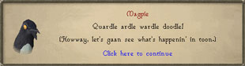
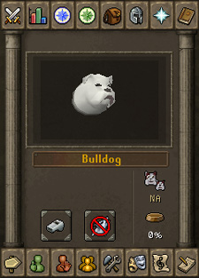

")
Summoning - The Basics
Introduction | Infusing Pouches | Summoning Familiars | Summoning Scrolls and Special Moves
Familiars and Combat | Pets
Familiars and Combat | Pets
Introduction

For many centuries now, the druids of Taverley and some of the ogre shamans of Gu'Tanoth have been bringing various familiars from other realms to help them with a variety of their tasks. Of course, the druids being peaceful and the ogres being more 'business-like', they traditionally summon entirely different familiars - what would a druid want with a rune minotaur, for example? What would an ogre do with a unicorn stallion?
Having realised how useful this skill is to the adventurers of RuneScape, they have released the secret of their powers, and now you can enjoy the curious advantages that come with learning the art of Summoning.
Summoning works by 'infusing' the essence of a creature from a strange realm into a type of pouch. When the Summoning pouch is opened, a portal is briefly activated to pull the familiar through to the world of RuneScape, where it is bound to serve its master for a period of time before the portal closes and it is pulled back.
Summoning is a three-stage skill. That is, there are three distinct aspects to Summoning and using familiars. These stages are as follows:
- Infusing pouches
Using special ingredients and the charged Summoning obelisks, you can create Summoning pouches which contain a familiar's essence.
- Summoning familiars
Opening the pouch summons the familiar to follow you about and help you as you travel across RuneScape.
- Using Summoning scrolls
Pouches can be 'transformed' into Summoning scrolls. All familiars have a special ability that can only be used if you have the correct scrolls.
Infusing Pouches

You can remind yourself of the ingredients you need by moving your mouse over a pouch in the interface. Like many other skills, you can right-click on a pouch to bring up options for infusing many pouches at once. You can also get a written list of ingredients by right-clicking on the pouch and selecting 'List'.
Summoning Familiars
| To summon a familiar for which you have a pouch, simply right-click on the pouch and select 'Summon'. You will see your familiar appear next to you. Note that you can only have one follower (either a pet or a familiar) out at any one time; there are also a very small number of areas that will not allow you to summon a familiar, usually only if you are standing very near a fully-charged obelisk. |
To keep track of your familiar or to use its special move (by using a Summoning scroll), right-click the Summoning icon next to the minimap. This will bring up a range of options to choose from. The first option will always be to use the familiar's special move so that you can activate them with a single click, and is followed by:
- Follower details
- Call follower
- Dismiss now
- Take BoB
- Renew familiar

| The Summoning interface can be opened by selecting 'Follower details' and shows you a number of useful pieces of information, all of which you should keep in mind to get the most out of your familiars.
The bar at the top of the interface is the Special Move bar, which shows how much energy you have for using scrolls to make your familiar use its special move. This will recharge over time. Special moves and scrolls are explained more fully below. Just below the special move bar is the button which activates your familiar's special move, provided you have the correct scroll in your inventory or in a charged headdress. If you hover your mouse over this icon, you will see a display explaining what the special move does and how much of your special move bar it will use. Opposite this button is another that can be used to order the familiar to attack a specific target. Below the image of your familiar are icons showing you your current Summoning points remaining (49/50 in this image) and how long your familiar can remain with you in minutes. Because Summoning familiars costs you Summoning points, you will often find that you need to recharge. You can do this by heading to any Summoning obelisk, right-clicking on it and selecting 'Renew-Points', or by drinking a Summoning potion. Summoning potions also restore a portion of your special move bar. |
At the bottom of the interface is an arrangement of buttons.
|
|
Call Familiar Some familiars can be left to perform actions, or end up trapped on the far side of a rock or a tree. To call your familiar back to you, simply click this button and they will reappear at your side. If you are fighting in a multicombat area, this button will also make your familiar attack your enemy. |
|
|
Renew Familiar For your convenience, this button can be used to completely renew your familiar's timer when it is running low. In order to do so, you must have another pouch of the same type in your inventory. |
|
|
Take Beast of Burden items If you have a beast of burden or a forager out, you can click this button to transfer any items they are carrying to your own inventory. If they have too many items for you to carry, they will give you as many as you can carry. |
|
|
Dismiss Familiar If you no longer need your familiar around, you can click this button to send them back to their strange realm. |
The length of time a familiar will remain with you depends on the familiar you have summoned. All familiars will stay with you for a set period of time. There is an initial Summoning points cost to summon a familiar, though, so you must have enough Summoning points to support this. It's easy to top-up your points, though: just have a look for a small obelisk.
When you have your familiar out, you'll discover that many of them have a number of special abilities that you can use to your advantage. If you're unsure what your familiar can do, please read Summoning - Familiars. If you're looking for a familiar to help with a specific aspect of your training, you may prefer to have a look at Summoning - Skill Focuses. This article shows each type of familiar according to its best skill.
Talking to your familiar

Obviously, you can never understand a familiar with a Summoning level of 91, as you will not be able to boost your level above 100 (and only to 100 if you have the Summoning skillcape). In addition, abyssal creatures are strange, unnatural beasts, and will only speak in what seems to be gibberish.
Summoning Scrolls and Special Moves
|
|
All familiars have a 'special move' that can be activated by using a Summoning scroll. There are many different special moves, to see what your familiar does, please read Summoning - Scrolls. |

If you have a pouch in your inventory, the relevant scroll will be highlighted. To create a scroll, simply click on the image to 'transform' a pouch into ten scrolls. You can transform several pouches at once by right-clicking and selecting '1', '5', '10', 'X' or 'All'.
Using special moves will use up some of your special move energy, which you can see at the top of the Summoning interface. Like special attack energy, this recharges over time. To see how much of your special move energy is used by each scroll, please see the Summoning - Scrolls article.
Note that although many special moves will activate when you click the special move button, some special moves will require you to specify a target (the Bull Rush special moves, for instance).
Familiars and Combat

Of course, because your familiar is separate from you, they can only help you to fight in multicombat areas. To see the largest areas where your familiars can fight with you and use their special moves, please read the Summoning - Locations article.
To make the most of your familiars' special moves, you might like to invest in some headgear, which can store scrolls to be used randomly when your opponents hit you.
If you find yourself facing someone else who has a familiar (in the Duel Arena, for instance), you will find it useful to know that familiars' attacks are occasionally unlike the usual Melee, Ranged or Magic that you might expect. Most armour has a specific defence value against familiars' special moves and some of their stranger attacks, and if your Prayer level is high enough you may be able to use the Protect from Summoning prayer to minimise the damage you will receive from their attacks.
Pets

Pets can be purchased from pet shops, caught using the Hunter skill, received from birds' nests when Woodcutting, or as drops from some monsters.
If you find yourself in possession of an egg, you will need to use an incubator to make it hatch. You can find an incubator in any of the pet shops. After a short period of time you will be able to go back to the incubator to collect your new pet.
When you have your pet out and following you, you will be able to right-click the Summoning icon next to the minimap and select 'Follower details' to see how your pet is getting along.
Like the interface for keeping track of your familiars, there are a couple of useful bits of information available.
The 'feeding dish' icon shows your pet's hunger. The higher the number, the more they need to eat. If you don't feed your pet regularly enough, they are likely to run away, so remember to keep some snacks on you! You can find out what your pet likes to eat by reading Summoning - Pets.
The other icon, showing an adult bulldog and a bulldog puppy, shows how far your pet is towards being fully grown. Most pets go from being puppies/chicks/etc. to an adult state, but the Guthix raptor, Saradomin owl and Zamorak hawk all have an intermediate stage.

More articles in
Combat
|
More articles in
Summoning (Members Only)
|
|
Further Help
If this article does not help you, you may find the following sections of the RuneScape site helpful:
|
|